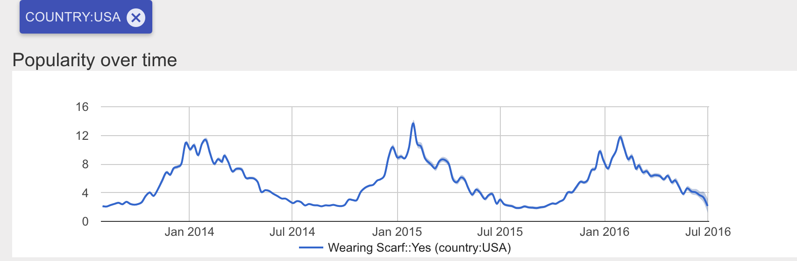
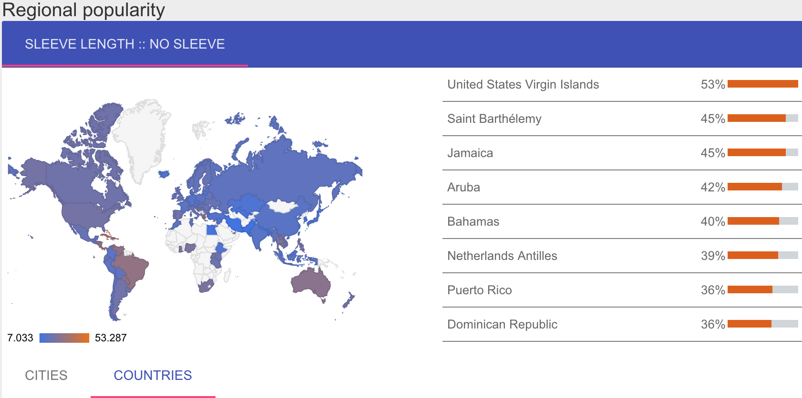
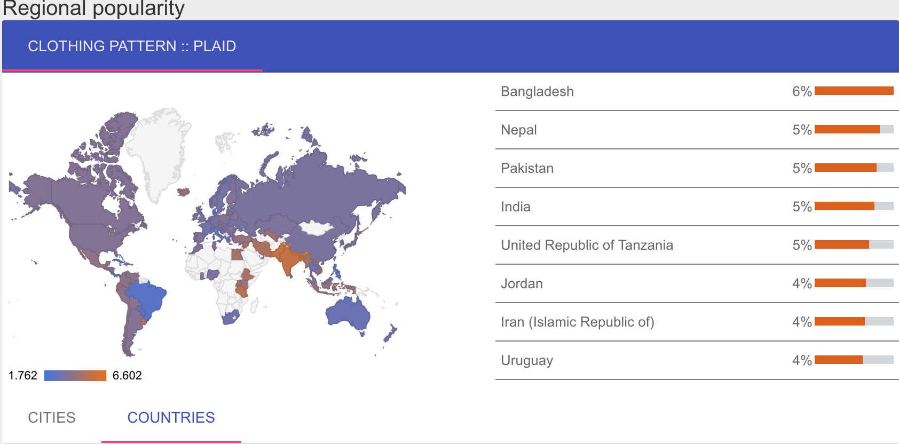

6/25/17 - AI algorithm analyzes millions of Instragram photos to measure global fashion trends
Researchers at Cornell University published a paper this month
detailing the results of a computer analysis of over 100 million photos uploaded to Instagram over a three-year period.
1 / 3

In the US, peak scarf popularity occurs at the end of January
2 / 3

Sleevless shirts are most popular in Central America
3 / 3

Despite its association with American hipsters, plaid is actually most commonly worn in Western Asia.